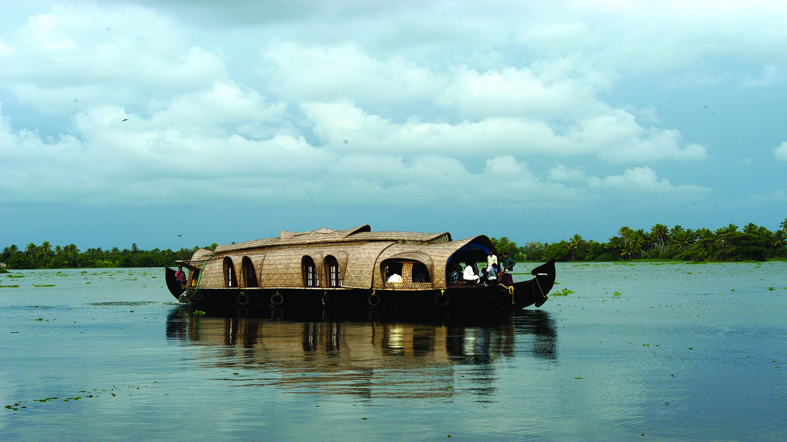
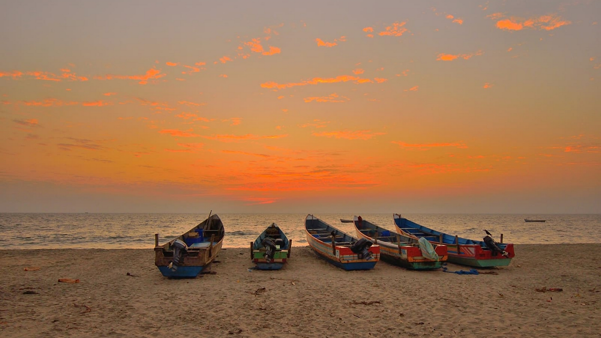

EXPLORE ALAPUZHA
Referred to as the Venice of the East, Alappuzha has always enjoyed an important place in the maritime history of Kerala. Today, it is famous for its boat races, backwater holidays, beaches, marine products and coir industry. Alappuzha Beach is a popular picnic spot. The pier, which extends out to the sea here, is over 137 years old. Entertainment facilities at the Vijaya Beach Park add to the attraction of the beach. There is also an old lighthouse nearby which greatly intrigues all visitors. Another delightful experience while in Alappuzha is the houseboat cruise. The houseboats you find in the backwaters of Alappuzha are in fact a reworked version of the Kettuvallams of olden times. Kettuvallam is a Malayalam word, ‘Kettu’, refers to dwelling structures and ‘Vallom’ means boat. In the olden days, kettuvallam or boat with thatched roof that covers over wooden hulls was used to carry tons of rice and spices.
The Great Backwaters of Kerala is a phenomenon that has held travellers in awe since time eternal. But no amount of reading, Googling or watching videos will ever prepare one for the experience of floating along the green waters in a boat. That first wobble of the boat as you step on board, the gentle lullaby of the lapping waters, the way the rich greenery of Mother Nature envelops you, as you settle down on the boat… A cruise on the backwaters of Kerala is one of those rare experiences that move you in ways more than one.
The Great Backwaters of Kerala is a phenomenon that has held travellers in awe since time eternal. But no amount of reading, Googling or watching videos will ever prepare one for the experience of floating along the green waters in a boat. That first wobble of the boat as you step on board, the gentle lullaby of the lapping waters, the way the rich greenery of Mother Nature envelops you, as you settle down on the boat… A cruise on the backwaters of Kerala is one of those rare experiences that move you in ways more than one.
Pathiramanal is a bird watcher’s paradise. It is about 1.5 km from Muhamma Boat Jetty and about 13 km from Alappuzha. This small island on the backwaters is a safe haven for hundreds of rare migrating birds. A 1.5 hour motor boat ride or a 30 minute speedboat trip from Alappuzha gets you here. Surrounded by the Vembanad Lake, stretching from Alappuzha to Kochi and the Kayamkulam Lake, Pathiramanal is accessible only by boat. It is an ideal pit stop in the middle of a houseboat ride.